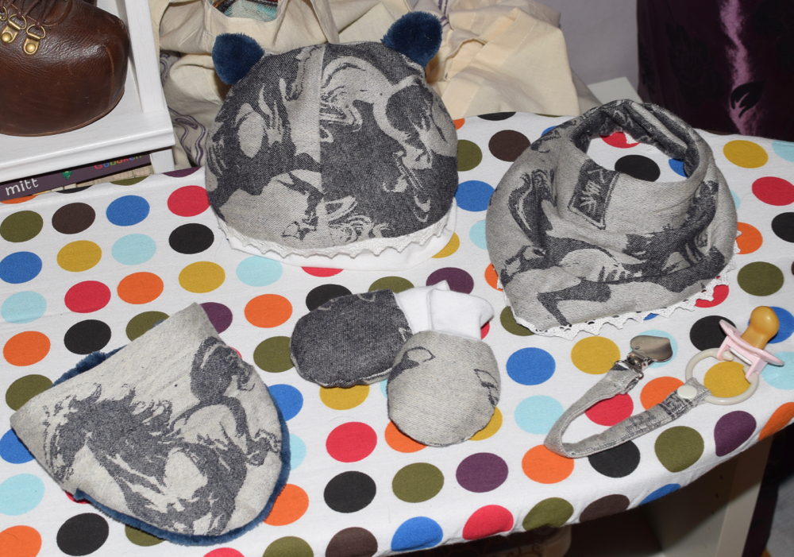

Uppgift 3.5.2 Bildhantering
Bildbyte (attr)

Bildbyte med rollover-effekt
Canvas
- Rita raka linjer och kurvlinjer
- Rita bézier-kurvor och former ifyllda med både färg, mönster och gradienter
- Rita text (exempelvis dagens datum/tid)
- Använda transparens och skuggor
- Lägga till en eller flera bitmappad bilder
- Använda en teknik för att spara bilden
